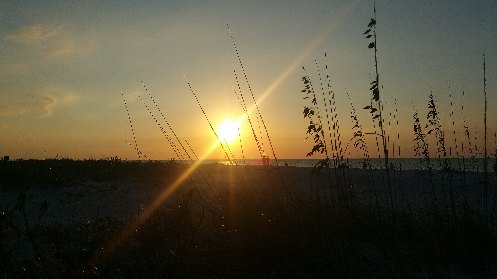
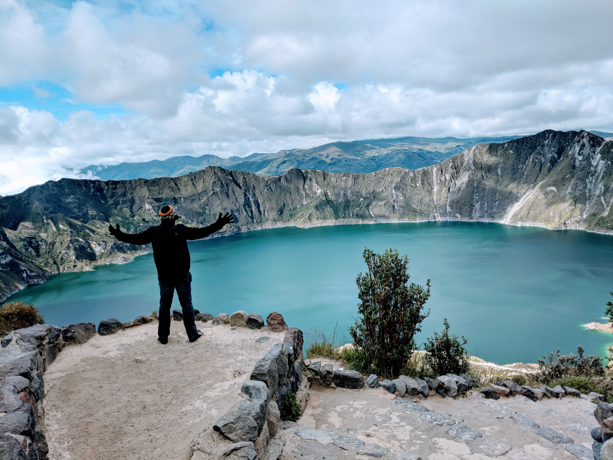

The first one is a paradaise with nine miles of beautiful beaches and acres of pine forests, oak-palm hammocks and mangrove swamps, this barrier island park is a Gulf Coast. Cayo Costa is accessible only by private boat or ferry.
The closest place to sun is The Andes mountains, and in the middle of awesome mixture of threes and animals, there are a place called Quilotoa Lagoon in Ecuador, about 3 hours from Quito.
